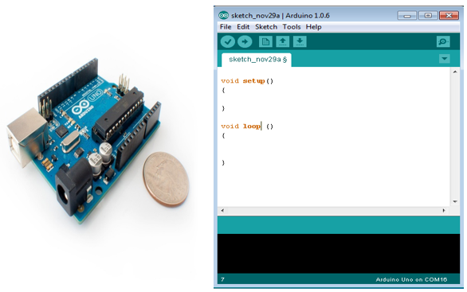
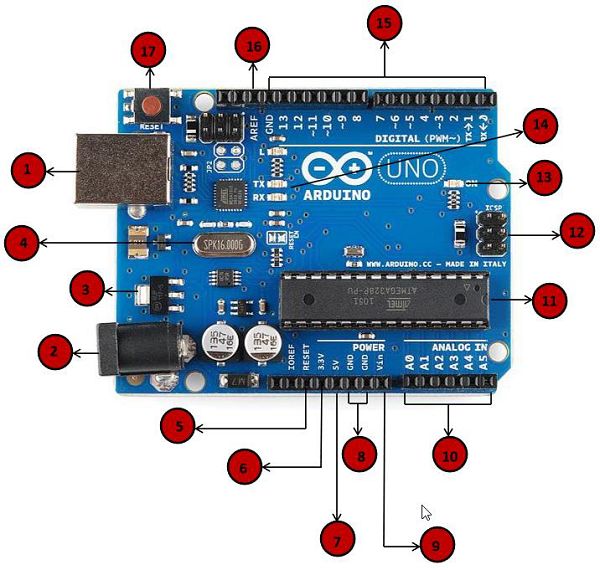

Arduino 102: Arduino Basic functions
Overview
Arduino is a prototype platform (open-source) based on an easy-to-use hardware and software. It consists of a circuit board, which can be programed (referred to as a microcontroller) and a ready-made software called Arduino IDE (Integrated Development Environment), which is used to write and upload the computer code to the physical board.
The key features are −
Arduino boards are able to read analog or digital input signals from different sensors and turn it into an output such as activating a motor, turning LED on/off, connect to the cloud and many other actions.
You can control your board functions by sending a set of instructions to the microcontroller on the board via Arduino IDE (referred to as uploading software).
Unlike most previous programmable circuit boards, Arduino does not need an extra piece of hardware (called a programmer) in order to load a new code onto the board. You can simply use a USB cable.
Additionally, the Arduino IDE uses a simplified version of C++, making it easier to learn to program.
Finally, Arduino provides a standard form factor that breaks the functions of the micro-controller into a more accessible package.

Arduino Uno - Board Description
We will study the Arduino UNO board because it is the most popular board in the Arduino board family. In addition, it is the best board to get started with electronics and coding. Some boards look a bit different from the one given below, but most Arduinos have majority of these components in common.
1. Power USB
Arduino board can be powered by using the USB cable from your computer. All you need to do is connect the USB cable to the USB connection (1).
2. Power (Barrel Jack)
Arduino boards can be powered directly from the AC mains power supply by connecting it to the Barrel Jack (2).
3. Voltage Regulator
The function of the voltage regulator is to control the voltage given to the Arduino board and stabilize the DC voltages used by the processor and other elements.
4. Crystal Oscillator
The crystal oscillator helps Arduino in dealing with time issues. How does Arduino calculate time? The answer is, by using the crystal oscillator. The number printed on top of the Arduino crystal is 16.000H9H. It tells us that the frequency is 16,000,000 Hertz or 16 MHz.
5, 17. Arduino Reset
You can reset your Arduino board, i.e., start your program from the beginning. You can reset the UNO board in two ways. First, by using the reset button (17) on the board. Second, you can connect an external reset button to the Arduino pin labelled RESET (5).
6, 7, 8, 9. Pins (3.3, 5, GND, Vin)
> 3.3V (6) − Supply 3.3 output volt
> 5V (7) − Supply 5 output volt
> Most of the components used with Arduino board works fine with 3.3 volt and 5 volt.
> GND (8)(Ground) − There are several GND pins on the Arduino, any of which can be used to ground your circuit.
> Vin (9) − This pin also can be used to power the Arduino board from an external power source, like AC mains power supply.
10. Analog Pins
Analog pins The Arduino UNO board has six analog input pins A0 through A5. These pins can read the signal from an analog sensor like the humidity sensor or temperature sensor and convert it into a digital value that can be read by the microprocessor.
11. Main micro-controller
Each Arduino board has its own microcontroller (11). You can assume it as the brain of your board. The main IC (integrated circuit) on the Arduino is slightly different from board to board. The microcontrollers are usually of the ATMEL Company. You must know what IC your board has before loading up a new program from the Arduino IDE. This information is available on the top of the IC. For more details about the IC construction and functions, you can refer to the data sheet.
12. ICSP pin
Mostly, ICSP (12) is an AVR, a tiny programming header for the Arduino consisting of MOSI, MISO, SCK, RESET, VCC, and GND. It is often referred to as an SPI (Serial Peripheral Interface), which could be considered as an "expansion" of the output. Actually, you are slaving the output device to the master of the SPI bus.
13. Power LED Indicator
This LED should light up when you plug your Arduino into a power source to indicate that your board is powered up correctly. If this light does not turn on, then there is something wrong with the connection.
14. TX & RX LED's
On your board, you will find two labels: TX (transmit) and RX (receive). They appear in two places on the Arduino UNO board. First, at the digital pins 0 and 1, to indicate the pins responsible for serial communication. Second, the TX and RX led (13). The TX led flashes with different speed while sending the serial data. The speed of flashing depends on the baud rate used by the board. RX flashes during the receiving process.
15. Digital I/O
The Arduino UNO board has 14 digital I/O pins (15) (of which 6 provide PWM (Pulse Width Modulation) output. These pins can be configured to work as input digital pins to read logic values (0 or 1) or as digital output pins to drive different modules like LEDs, relays, etc. The pins labeled “~” can be used to generate PWM.
16. AREF
AREF stands for Analog Reference. It is sometimes, used to set an external reference voltage (between 0 and 5 Volts) as the upper limit for the analog input pins.
Program Structure of Arduino
The Arduino software is open-source. The source code for the Java environment is released under the GPL and the C/C++ microcontroller libraries are under the LGPL.
Sketch − The first new terminology is the Arduino program called “sketch”.
Structure
Arduino programs can be divided in three main parts: Structure, Values (variables and constants), and Functions. In this tutorial, we will learn about the Arduino software program, step by step, and how we can write the program without any syntax or compilation error.
Let us start with the Structure. Software structure consist of two main functions −
Setup( ) function
Loop( ) function

Structure
Void setup ( ) {
}
PURPOSE − The setup() function is called when a sketch starts. Use it to initialize the variables, pin modes, start using libraries, etc. The setup function will only run once, after each power up or reset of the Arduino board.
INPUT − -
OUTPUT − -
RETURN − -
Void Loop ( ) {
}
PURPOSE − After creating a setup() function, which initializes and sets the initial values, the loop() function does precisely what its name suggests, and loops consecutively, allowing your program to change and respond. Use it to actively control the Arduino board.
INPUT − -
OUTPUT − -
RETURN − -
Arduino Digital I/O Functions
In Arduino, digital I/O (Input/Output) functions allow the microcontroller to interact with external devices, such as sensors, LEDs, motors, and switches. These functions control the digital pins on the board, which can be set as either inputs or outputs.
1. Digital Pins in Arduino
Arduino boards have digital pins labeled D0 to D13. These pins can be configured as input or output.
- HIGH (1 or 5V/3.3V) - Voltage is present.
- LOW (0 or 0V/GND) - No voltage.
2. Digital I/O Functions
A. pinMode() - Configuring a Pin
Used to set a pin as INPUT, OUTPUT, or INPUT_PULLUP.
void setup() {
pinMode(7, OUTPUT);
pinMode(2, INPUT);
}B. digitalWrite() - Setting Output HIGH or LOW
Used to turn ON or OFF a digital output.
void setup() {
pinMode(7, OUTPUT);
}
void loop() {
digitalWrite(7, HIGH); // Turn LED ON
delay(1000);
digitalWrite(7, LOW); // Turn LED OFF
delay(1000);
}C. digitalRead() - Reading Digital Input
Used to read the state of an input pin.
void setup() {
pinMode(2, INPUT);
pinMode(13, OUTPUT);
}
void loop() {
int buttonState = digitalRead(2);
if (buttonState == HIGH) {
digitalWrite(13, HIGH);
} else {
digitalWrite(13, LOW);
}
}3. Additional Notes
- Internal Pull-Up Resistors: You can enable an internal pull-up resistor using
pinMode(2, INPUT_PULLUP);. - PWM (Pulse Width Modulation): Digital pins with
~(e.g., ~3, ~5, ~6) support PWM for analog-like control.
Summary Table
| Function | Purpose | Example |
|---|---|---|
pinMode() |
Set pin as INPUT, OUTPUT, or INPUT_PULLUP | pinMode(7, OUTPUT); |
digitalWrite() |
Set a pin HIGH or LOW | digitalWrite(7, HIGH); |
digitalRead() |
Read if a pin is HIGH or LOW | int state = digitalRead(2); |
Arduino Analog I/O Functions
1. Understanding Analog Pins in Arduino
Arduino has dedicated analog pins labeled A0 to A5 (in most boards) that support analog input. Unlike digital pins, which have only HIGH (1) or LOW (0) states, analog pins can read a range of values.
2. How Analog I/O Works
Analog Input (ADC - Analog to Digital Conversion)
Arduino's analog input works using an ADC (Analog-to-Digital Converter), which converts an analog voltage (0V to 5V) into a digital value (0 to 1023).
Analog Output (PWM - Pulse Width Modulation)
Since most Arduino boards do not have true analog output, they use PWM (Pulse Width Modulation) to simulate analog output by rapidly switching the pin between HIGH and LOW at varying duty cycles.
3. Analog I/O Functions
A. analogRead() - Reading Analog Values
Used to read an analog voltage (0-5V) and convert it to a value between 0 and 1023.
void setup() {
Serial.begin(9600); // Start serial communication
}
void loop() {
int sensorValue = analogRead(A0); // Read analog input from A0
Serial.println(sensorValue); // Print value to Serial Monitor
delay(500);
}B. analogWrite() - Simulating Analog Output using PWM
Writes a pseudo-analog output using PWM (values between 0 and 255).
void setup() {
pinMode(9, OUTPUT); // Set pin 9 as output
}
void loop() {
analogWrite(9, 128); // Set PWM value (50% duty cycle)
delay(1000);
analogWrite(9, 255); // Set PWM value (100% duty cycle)
delay(1000);
}4. Summary Table
| Function | Purpose | Example |
|---|---|---|
analogRead() |
Reads an analog voltage (0-5V) and returns a value (0-1023) | int val = analogRead(A0); |
analogWrite() |
Outputs a PWM signal (0-255) | analogWrite(9, 128); |
Arduino Advanced I/O Functions
1. Advanced I/O Capabilities
Arduino provides several advanced I/O functions for precise control over hardware peripherals.
2. Advanced I/O Functions
A. shiftOut() - Serial Data Output
Used to send data one bit at a time to shift registers.
int data = 0b10101010;
void setup() {
pinMode(11, OUTPUT);
pinMode(12, OUTPUT);
}
void loop() {
shiftOut(11, 12, MSBFIRST, data);
delay(1000);
}B. shiftIn() - Serial Data Input
Reads serial data one bit at a time.
int incoming;
void setup() {
pinMode(6, INPUT);
pinMode(7, OUTPUT);
}
void loop() {
incoming = shiftIn(6, 7, LSBFIRST);
}C. pulseIn() - Measuring Pulse Width
Measures the duration of a HIGH or LOW pulse.
long duration;
void setup() {
pinMode(8, INPUT);
}
void loop() {
duration = pulseIn(8, HIGH);
}D. tone() & noTone() - Generating Sound
Generates a square wave of a specified frequency.
void setup() {
tone(9, 1000); // 1 kHz tone
delay(500);
noTone(9);
}Summary Table
| Function | Purpose | Example |
|---|---|---|
shiftOut() |
Serially shift bits to output device | shiftOut(11, 12, MSBFIRST, 0xAA); |
shiftIn() |
Serially read bits from input | int data = shiftIn(6, 7, LSBFIRST); |
pulseIn() |
Measure pulse duration | long duration = pulseIn(8, HIGH); |
tone() |
Generate square wave sound | tone(9, 1000); |
noTone() |
Stop tone generation | noTone(9); |